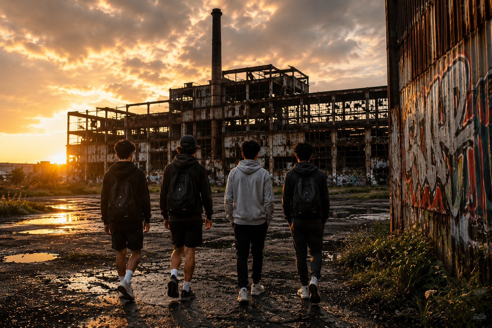
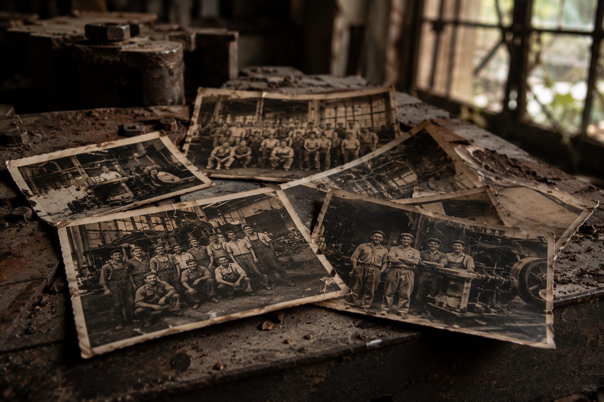
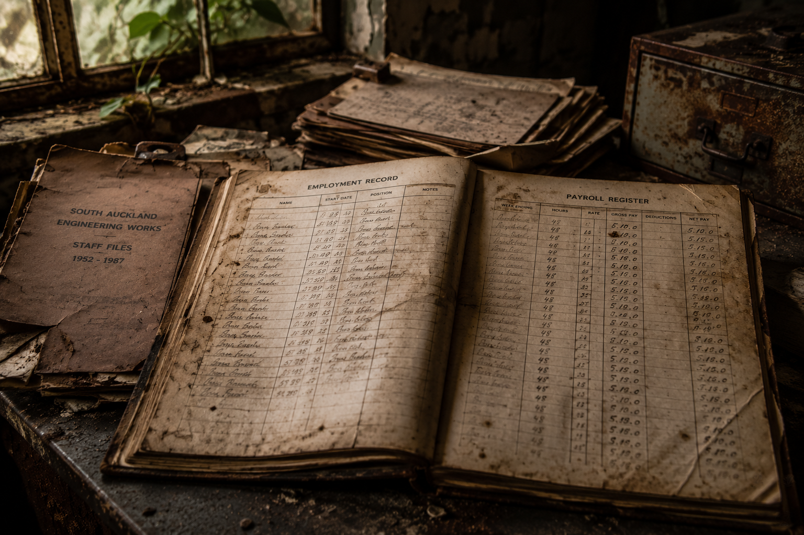
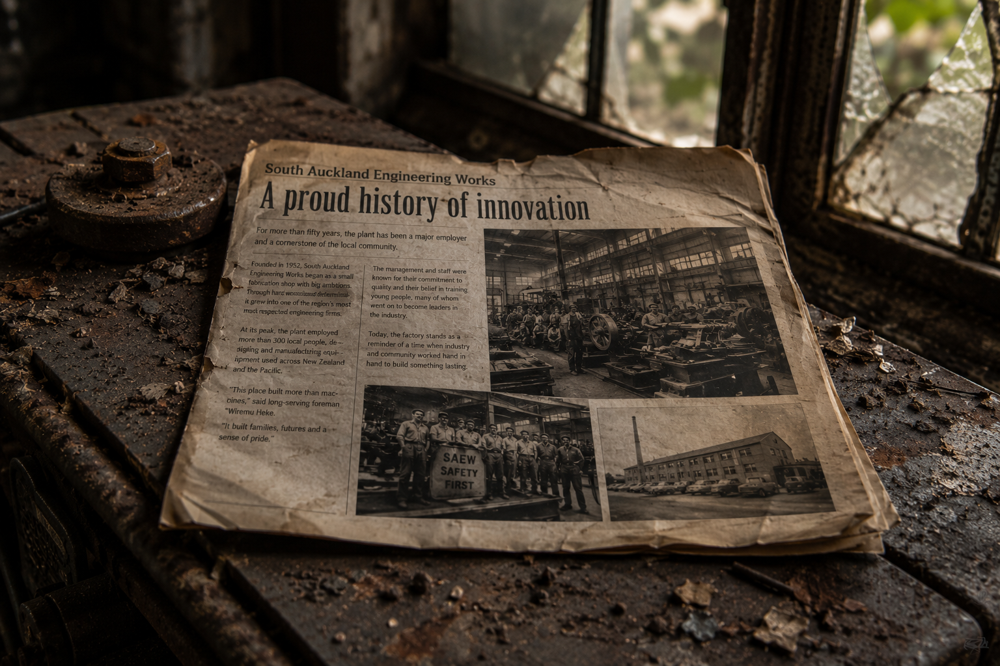
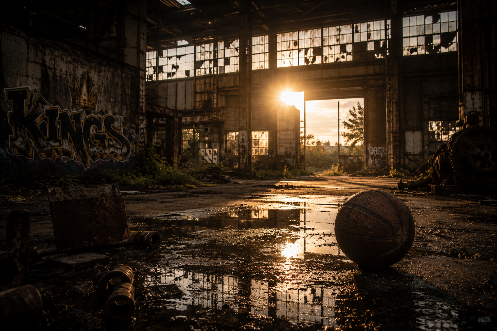
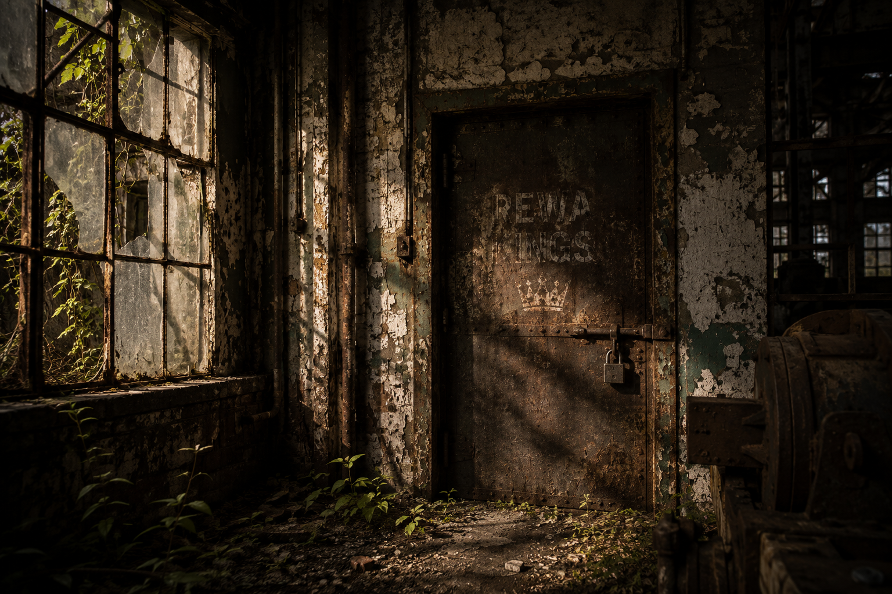
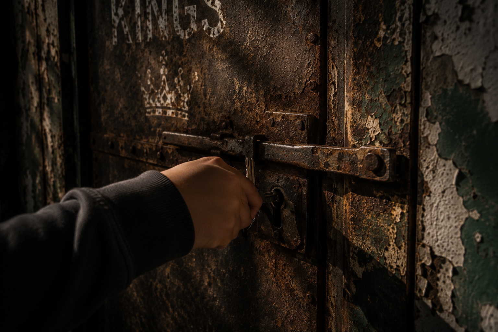
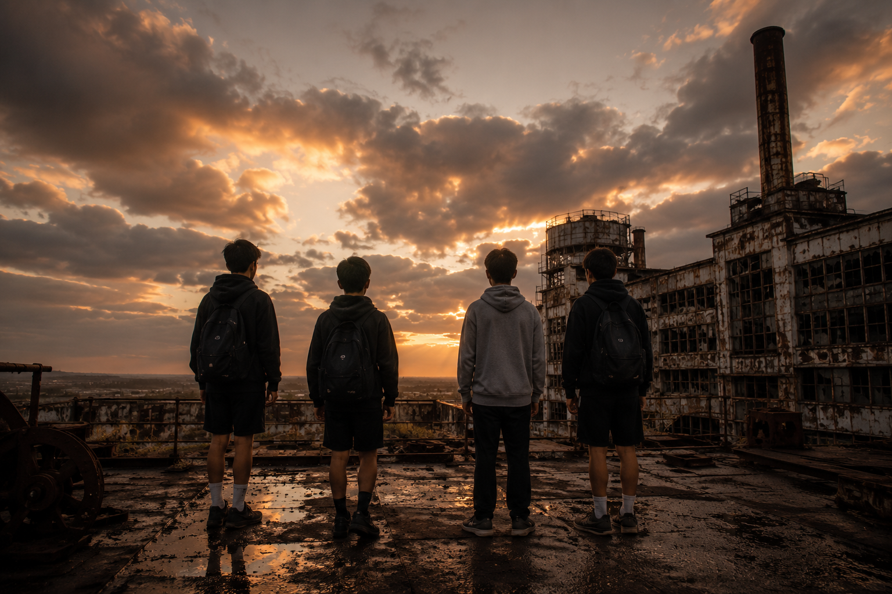
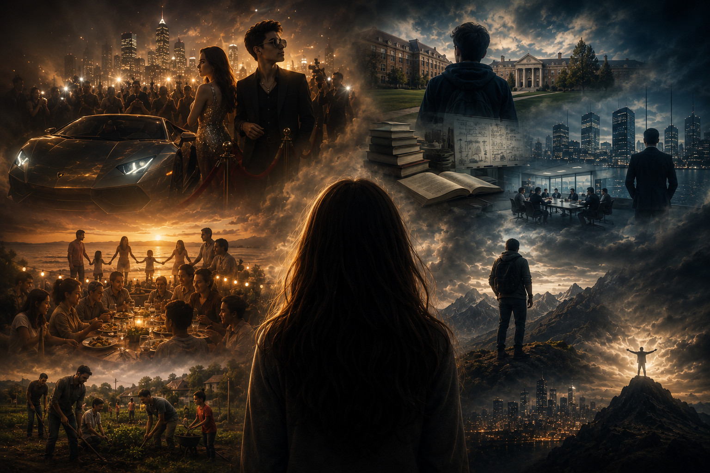

Read the Story
Part 1: The Factory
The old factory stood at the edge of Manurewa like a forgotten monument to another era, its rusting steel frame rising above overgrown grass and cracked concrete that had slowly reclaimed the ground where hundreds of workers had once arrived before dawn each morning.
During the 1980s the site had been a hive of activity, with trucks moving through the gates, machinery humming throughout the day, and workers filling the surrounding streets at the beginning and end of every shift.
Some people said the factory built cars, while others insisted it only assembled them from parts shipped in from overseas, but nobody in Ari's generation seemed entirely sure.
Ari and his mates passed the factory almost every day on their way home from school, yet it always seemed to draw their attention back, as though the silent building carried stories that refused to disappear.
Looking at the shattered windows, fading signs and empty carparks, Ari could not help wondering what had been lost—and whether something important might still be waiting to be found.

Language Device
Identify the device used in the sentence.
Memory Flip
Flip each card to retrieve an important detail.
Part 2: The Search
What began as a place to explore quickly became an obsession. Every afternoon, the boys found themselves drawn back to the factory, pushing deeper into sections of the building they had never noticed before.
Behind rusted roller doors and along dim corridors lined with peeling paint, they discovered traces of the people who had once spent their lives there.
Dust-covered filing cabinets still contained employment records listing names, addresses and start dates, transforming anonymous workers into real people who had once walked the same concrete floors.
Faded photographs showed smiling groups gathered beside machinery, their faces frozen in moments of pride that seemed strangely at odds with the silence now filling the building.
Piece by piece, the boys understood that the factory had once been the beating heart of the neighbourhood, and its loss had left a mark long after the machines had fallen silent.



True or False
Choose the best answer.
The boys were only searching for treasure.
The records helped make the old workers feel real.
Inference
Explain what the evidence suggests.
Part 3: The Kings
As intermediate school moved towards its end, the boys began talking more often about what would happen next.
High school waited ahead of them, bringing new people, new choices and the uncomfortable possibility that their friendship might not remain the same.
Some imagined leaving Manurewa. Others wanted to stay close to family. Each boy carried a different idea of success.
The factory became the place where they met, argued, laughed and tried to make sense of the future.
Among the rusted walls and forgotten machines, they had created their own Camelot.

Symbolism
Think beyond the literal meaning.
Memory Flip
Recall the questions facing the boys.
Part 4: The Key
The door had been there the entire time, hidden behind a collapsed storage area at the far end of the factory.
Unlike the other doors, this one remained firmly closed. A thick layer of dust covered its surface, while a large iron padlock secured it shut. Protruding from the centre of the lock was a single rusted key.
Each boy tried to turn it. The key refused to move.
Eventually Ari stepped forward. He wrapped his fingers around the cold metal and applied gentle pressure. The lock responded instantly.
The sharp click echoed through the factory. Beyond the door sat a metal briefcase. Inside, neatly stacked bundles of cash filled the case from edge to edge.


Writer's Craft
How is suspense created?
True or False
Check the important details.
Every boy could turn the key.
The briefcase was filled with cash.
Part 5: Futures
Standing around the open briefcase, each boy began to imagine what the money might make possible.
Lance imagined status, cars, attention and the feeling of being known. Percy imagined education, business and success. Gali imagined family, community and giving something back. Mordred imagined escape, power and freedom.
Ari did not see one future. He saw hundreds: a branching tree of choices, mistakes, friendships, losses and opportunities.
Then the futures slipped away. The offices, sports grounds, city skylines and family homes dissolved into the fading afternoon light.
The boys had not moved. The briefcase was still open. The money still sat between them. Beyond the broken windows, the lights of Manurewa flickered to life.
Five boys. One briefcase. A thousand possible futures.


Theme
What is the story really asking?
Language Device
Identify the strongest device.